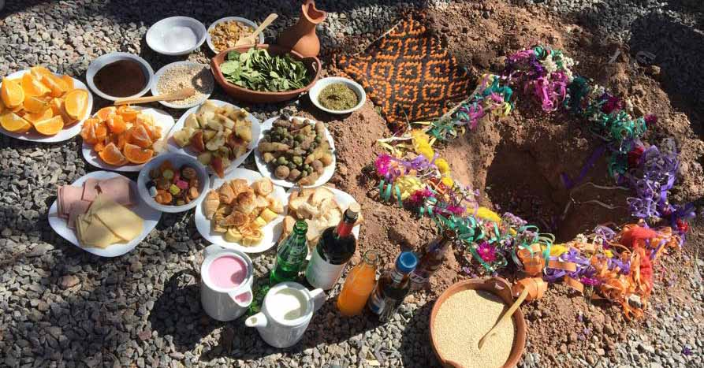

La Pachamama es una deidad venerada en la cultura andina, considerada la madre tierra que provee sustento y protección a los pueblos originarios.
En Jujuy, cada 1 de agosto se celebra el Día de la Pachamama con rituales ancestrales, donde se ofrece comida, bebidas y hojas de coca en señal de gratitud.
